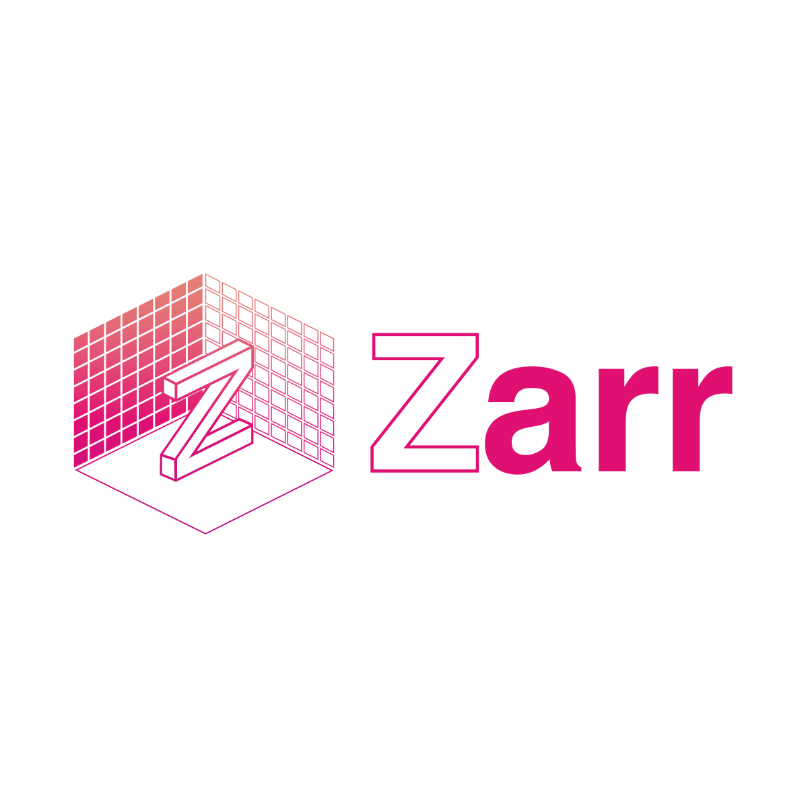
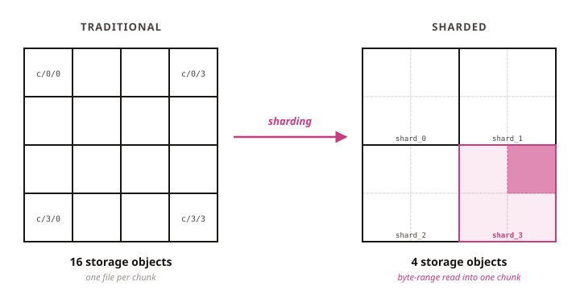
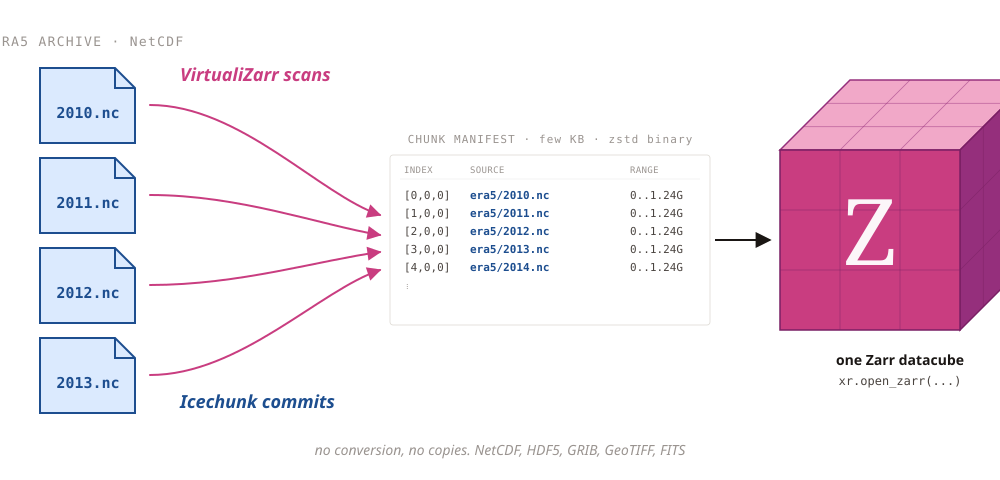
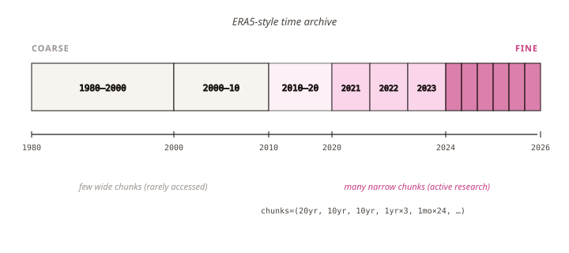

Zarr at scale

Many small chunks, few storage objects
Sharding packs thousands of chunks into a single storage object. Readers fetch only the bytes they need via byte-range requests, so random access stays fast.

egu26-zarr-at-scale/sharding

Read archival files as one Zarr dataset
VirtualiZarr scans existing files and builds a virtual manifest. Icechunk commits these manifests transactionally. xarray reads across the whole archive as a single Zarr dataset.
egu26-zarr-at-scale/virtualization

One array, many chunk sizes
Just landed in zarr-python. A Zarr array can now have non-uniform chunks along any axis. Faster reads where activity concentrates, less storage overall.

egu26-zarr-at-scale/variable-chunk-grids

Render multi-terabyte datasets in the browser
Zarrita.js reads Zarr chunks directly from a browser fetch. deck.gl-raster pushes them onto the GPU. Pan, zoom, recolor a multi-terabyte dataset interactively, on a laptop.
egu26-zarr-at-scale/in-browser

GeoZarr: open conventions for geospatial Zarr
Composable conventions for CRS, spatial transforms, pyramids, and climate metadata. OGC standardization in progress, target summer 2026.
on GitHub